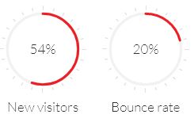

Blocks, Pie Chart¶
Create highly customizable, very easy to implement and responsive pie chart to impress your audience.
Pie like a breeze¶
Flat Pie Chart is a plugin from Rendro that uses the canvas element to render simple pie charts for single values. These charts are highly customizable, very easy to implement, scale to the resolution of the display of the client to provide sharp charts even on retina displays, and use requestAnimationFrame for smooth animations on modern devices.
